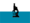

De: La Frikipedia, la enciclopedia extremadamente seria.
De: La Frikipedia, la enciclopedia extremadamente seria. De: La Frikipedia, la enciclopedia extremadamente seria.
| De la serie Circuitos de MotoGP: | |||
| Autódromo de Misano - Autódromo Marco Simoncelli | |||
| |||
| Localización: | | ||
| Sede del GP: |  GP de San Marino | ||
| Longitud: | 4.180 metros | ||
| Nº vueltas (En MotoGP): | 28 | ||
| Piloto con más victorias: | Eduardo Lauson, Farsentino Rossa y Jorge LOLenzo (2) | ||
| Años en la MotoGP: | 1981, 1983, 1985-87, 2007-actualidad | ||
| Índice de peligrosidad: | altísima | ||
| Número de accidentes por carrera: | No muchos | ||
| Valoración general: | Peligroso | ||
El Circuito de Misano, ahora conocido como Autódromo a ver quien llega antes a la meta río y otra del carro, NOTA: Si no tienes cuidadín con el Curvone puedes acabar como Shoya Tomizawa, es decir en el otro lado.
La primera curva, una chicane en la que hay varios adelantamientos como es natural en las primeras curvas de las primeras vueltas, por lo que es el resto ya no tiene mucha cosa.
Vuelta onboard en un Ferrari (minuto 0:55) El curvón más rápido del circuito, se coge a 250km/h ,las motos evidentemente, lo que puedes ver en el Fewari F2003-GA es una pasada a unos 270 o 280km/h o sea que ya te imaginas lo que le pasó Shoya Tomizawa (QEPD) y la velocidad a la que iban Scott Redding y Alex de Angelis (que no de Cesaris). Sin duda es un lugar mítico y si no díselo a la familia de Tomizawa que lleva existiendo desde el '72 (año de construcción).
Pués si, se llama Misano, como el circuito, y es la última curva que dependiendo como se mire puede ser una curvón rapidísimo o una curva lenta, es decir, ANTES: Se corría en sentido contrario y estaba un poco peraltada, vamos que en la salida se cogía acelerando a toda hostia y adelantando a cuatro pringaos pilotos por lo menos. AHORA: Después de ir con toda la adrenalina entre el Curvone, las sucesivas curvas rápidas y la recta siguiente viene una curva NO peraltada y por consiguiente más lenta y mala.
| Afoto del GP | Resumen |
|---|---|
 |
Trágico GP por la muerte del japonés Shoya Tomizawa, que se cayó en pleno curvone a más de 250km/h con la mala suerte de que Alex de Angelis y Scott Redding que venían picados lo gopearon en la cabeza y arrollaron respectivamente, Shoya salió despedido unos metros para delante, por ineptidud o algo parecido los comisarios no pararon la carrera ni hicieron nada más allá de colocar una mierda de vallas en las que ponía DOCTOR. Más tarde Shoya falleció en el hospital. |
| | |
|
Autor(es):